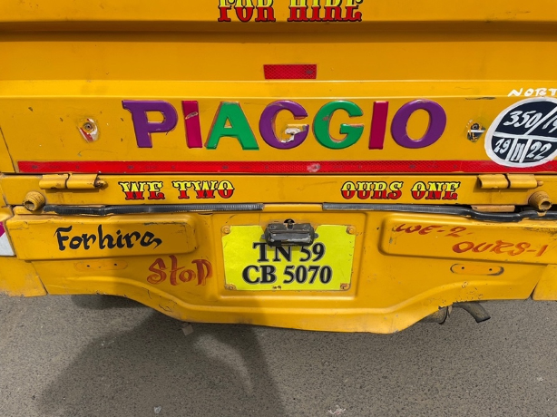

Recently, much discussion has centered around the horizontal aspects of group identity—that is, intersections between different types of group identities. Black feminist Kimberlé Crenshaw coined the term “intersectionality” to describe the phenomenon where group identities like race and gender overlap. For example, on the individual level, my identity exists at the intersection between white and male group identities. While the study of the horizontal aspects of group identity is appropriate, it is also necessary to consider the vertical aspects of group identity—that is, the taxonomy of groups and subgroups of the same type. For example, my Minnesotan group identity is a subset of my American group identity. An Arab proverb reads, “I against my brothers, I and my brothers against my cousins. I and my brothers and my cousins against the world.” This quote reflects how group identities exist simultaneously on various levels. The proverb also illustrates how conflict can impact the saliency of those group identities.
In India, the fundamental unit of society is the family rather than the individual. Historically in India, the term “family” has been interpreted broadly to include even the most distant of cousins. The first-millennium Tamil poet Thiruvalluvar stresses the importance of living with relatives:
His joy of life who mingles not with kinsmen gathered round,
Is lake where streams pour in, with no encircling bound. (Thirukkural 523)
Ancestral homes housed large extended families and stayed in families for generations. Muthu’s family’s ancestral home is in a small rural village in Tamil Nadu called Pattamangalam. Muthu’s family’s ancestral home is much like a Roman country house. In America, when we think rural, we think of houses on spacious acreage. In Pattamangalam, houses are concentrated in a dense area, and residential streets are the width of alleyways. The metal front door of Muthu’s family’s ancestral home opens directly onto the paved street. Sandals and flip-flops lie littered across the stone floor foyer. The main room—the atrium—is the size of a pickleball court. The floors of the atrium slope towards a drain in the floor for when it rains. A half-foot-deep depression the size of two ping-pong tables placed end-to-end occupies the center of the atrium. Above the depression, clotheslines hang from a metal grate. Around the depression, colonnades support the tile roofing, which slopes towards the center of the depression and intersects with the metal grate. Along the sides of the atrium are doors to small storage rooms. Behind the main atrium room is a kitchen with a stove and a fridge. Even though Muthu’s family’s ancestral home used to be larger and occupied by more of his extended family, it has since been partitioned into smaller sections. At one point, Muthu’s uncle filled a doorway with cement to separate his area of the house from Muthu’s appa (father) Meenakshi’s area of the house.
Atrium in Muthu’s family’s house
Over the past few decades, Indian society has shifted away from extended-family households toward immediate-family households. Many bottom-up and top-down factors contributed to the decline of extended-family households. Logistically, living with extended family became infeasible. In large groups, it was more difficult to monitor and enforce social norms related to group contributions. For example, even though one immediate family might have borne the brunt of the household chores, the entire extended family reaped the benefits of their work. A volunteer’s dilemma ensued: no immediate family wanted to complete household chores, but all immediate families wanted the household chores to be completed. In an immediate family, norms around household contributions were easier to enforce—it is clear who was doing the work, and those who slacked off could be easily castigated. As family conflict proliferated and houses became more difficult to maintain, Tamil mansions were partitioned between families. One side of the family would get half of the house, and the other side of the family would get the other half of the house.
A few days before I left India, we visited a series of massive Chettinad mansions in Kandanur. These mansions were larger variations of Muthu’s family’s ancestral home with bigger atria, more side rooms, and more stories. Every house we visited was completely empty. As we walked through the cavernous rooms, the owner would explain the consistent upkeep required to maintain the house, which was only used for large family functions. Since these houses remained uninhabited for most of the year and often stored wedding gifts and family heirlooms, they were a prime target for thieves. These large uninhabited mansions are a relic of the extended-family households of the past.
Tamil mansion in Kandanur
Government propaganda also played a role in the decline of extended family households. On the back of many trucks and auto rickshaws in Tamil Nadu, the English words “we two ours two” (sometimes “we two ours one”) are painted. Contrary to the belief of some Westerners, this aphorism is not a pithy meditation on sharing and community but the product of a targeted family-planning propaganda campaign. Blogger Tapan Avasthi notes that the Indian government crafted the slogan shortly after independence amidst fears of overpopulation to encourage parents (we two) to limit themselves to two children (ours two). Muthu’s family—which includes himself, his amma (mother), his appa (father), and his thangachi (younger sister)—fulfills the terms of the saying.

“We two ours one” painted on the back of an auto rickshaw
Hence, the two-parent-two-child nuclear family replaced the large extended family as the fundamental unit of Indian society. Extended family households are now a thing of the past. Whenever we attended family functions, Muthu couldn’t identify 90 percent of his relatives. Often, his amma Uma couldn’t even say how she was related to a given relative. But small remnants of the old extended-family living system remain. In direct address, Tamils refer to one another using familial names. Anna (elder brother) and thambi (younger brother) are used for men, and akka (elder sister) and thangachi (younger sister) are used for women. At one of the family functions, a young girl took a liking to me and referred to me as anna. The English familial terms “uncle” and “auntie” are used by adolescents as a respectful form of address for adult close family-friends.
Muthu’s extended family on his amma’s (mother’s) side
Regardless, tension exists between the broader extended family identity and the narrower immediate family identity. Inter-family conflict reduces the cohesiveness of extended families. In this way, one’s immediate family identity becomes more salient than one’s extended family identity. Narrower identities usually overshadow broader identities. I am more loyal to my family than my neighborhood, more loyal to my neighborhood than my city, more loyal to my city than my state, more loyal to my state than my country, and more loyal to my country than the world. By its nature, loyalty exists concentric circles.
Even as extended families fractured, other forms of large-group identity took their place. Caste-level group identification is common in India. Muthu’s family is part of a subset of India’s merchant caste known as the Cheettinad. While we were in Tamil Nadu, Muthu made a point to visit various Chettinad temples, restaurants, and museums to pay respect to his background. One day, we visited the Swamimalai museum inside the INDeco resort. Historical artifacts were haphazardly arranged throughout the lobby. While stumbling through the museum, Muthu came across a photo of Avudaiappan Chettiar, the first Tamil to be certified as pilot during the British occupation. Upon seeing such an accomplishment from a member of his group, Muthu excitedly relayed his discovery to his umma (mother) and thangachi (younger sister). Even though his Chettinad group identity extends beyond the scope of his immediate family, it is still narrow enough to impel his loyalty to the group.
Muthu expressed similar excitement about his Tamil identity. At the Rajarajeswaram Temple gift shop, I discovered a small figurine of an elderly Indian man in a suit. When I asked Muthu who the figurine represented, he said it was A. P. J. Abdul Kalam, a Tamil rocket scientist who was also President of India for a period. As he detailed Abdul Kalam’s accomplishments, his voice swelled with pride. Muthu’s Tamil identity, even though it is broader than his immediate family and Chettinad identities, still holds sway over his loyalty.
The Tamil identity is a subgroup of a broader Indian identity. Like with extended family identity, the Indian identity has become fraught because of ingroup conflict. This year, in 2022, India celebrated its 75th birthday. Indologist David Shulman notes that about a decade after gaining independence, the Indian government redrew the state borders to align with regional languages. Historically, according to Shulman, the Tamil language coexisted with other languages like Sanskrit, Telugu, and Malayalam. In fact, Shulman notes that the Tamil language shares many similarities with Sanskrit and Malayalam. But as languages were partitioned into different states, widespread bilingualism was replaced by linguistic nationalism.
Before I arrived in Tamil Nadu, Muthu told me to pay attention to the political party flags. On the first 6-hour drive to Pattamangalam, I saw a number of flags for different political parties. Each time I saw a flag, I would google what party the flag represented. Throughout my visit, as I grew familiar with the various flags, I would play a game where I would shout out the party names associated with each flag I saw. Our driver Raja Anna was quite amused by this behavior. The flag I saw most often was black on the top and red on the bottom. This flag represented the Dravida Munnetra Kazhagam (known colloquially as the DMK). The word dravidia refers to the south Indian cultural group and language family that includes Tamil. The DMK is a regional political party unique to Tamil Nadu. The DMK stakes its party platform on opposition to any form of north Indian control in Tamil Nadu, especially the imposition of Hindi as the national language. David Shulman notes how the Tamil language served as a standard around which the Tamil people could rally in opposition to the intrusive Hindi language and North Indian culture. As of 2022, the DMK is currently the ruling party in Tamil Nadu.
DMK Party flag
In contrast, the Indian government is ruled by the Bharatiya Janata Party (BJP), which takes a more nationalist rather than regionalist approach to politics. The BJP—unlike the DMK—focuses its messaging around Indian unity rather than Tamil unity. The BJP flag—which I saw frequently but not as frequently as the DMK flag—has a green strip on the left with a white lotus overlaid on an orange square on the right.
BJP Party car with a flag on the hood
Muthu’s behavior betrays sentiments of Tamil regionalism. When Muthu’s family had a layover in the North Indian city of Mumbai, Muthu got into a heated altercation with an immigration official. The immigration official greeted Muthu in Hindi, and Muthu asked him to speak in English seeing as he did not speak Hindi. The immigration official, who was legally obligated to be able to speak English, continued to speak to Muthu in Hindi. Muthu’s anger took a hold of him and he began yelling at the immigration official for his rudeness and refusal to speak English. Muthu’s outburst was in part spurred by the official’s individual incivility but also by the official’s disrespect of Indian multilingualism.
Hence, we see a conflict between the broader Indian identity and the narrower Tamil identity. The broader Indian identity fails to exert a strong enough influence on the Tamil people. The center cannot hold, as it were. Tamil identity is stronger by virtue of its narrow nature. Due to conflict between different language-speakers, the Tamil identity has become more salient for the Tamil people than the broader Indian identity.
Identity has both horizontal and vertical aspects. A person can be a part of many different kinds of identities, but also identify with different subgroups of identities. Narrower subgroups usually stir one’s sentiments more than broader groups. People have a penchant for the parochial. What results is entropy—extended families are prone to fragment into immediate families, and nations are prone to fragment into states. It’s the perennial problem with which communities must confront, administrations must address, and families must face.